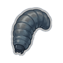
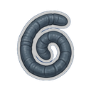
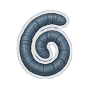
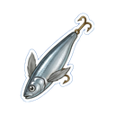
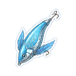

Bakır Yemi T1
T1Balıkçılıkta (ATÖLYELER) Bakır Çaça tutmak için harcanır.
- Kullanıldığı tarifler
 Bakır Çaça
Bakır Çaça
Balıkçılıkta (ATÖLYELER) Bakır Çaça tutmak için harcanır.
Bakır Çaça
Balıkçılıkta (ATÖLYELER) Demir Sazan tutmak için harcanır.
 Demir Sazan
Demir Sazan
Balıkçılıkta (ATÖLYELER) Çelik Levrek tutmak için harcanır.
 Çelik Levrek
Çelik Levrek
Balıkçılıkta (ATÖLYELER) Gümüş Alabalık tutmak için harcanır.
 Gümüş Alabalık
Gümüş Alabalık
Balıkçılıkta (ATÖLYELER) Altın Koi tutmak için harcanır.
 Altın Koi
Altın KoiBalıkçılıkta (ATÖLYELER) Platin Yılanbalığı tutmak için harcanır.
 Platin Yılanbalığı
Platin Yılanbalığı
Balıkçılıkta (ATÖLYELER) Selestit Ton Balığı tutmak için harcanır.
 Selestit Ton Balığı
Selestit Ton Balığı
Balıkçılıkta (ATÖLYELER) Adamantit Köpekbalığı tutmak için harcanır.
 Adamantit Köpekbalığı
Adamantit KöpekbalığıBalıkçılıkta (ATÖLYELER) Obsidyen Vatoz tutmak için harcanır.
 Obsidyen Vatoz
Obsidyen Vatoz
Balıkçılıkta (ATÖLYELER) Flamerit Leviathan tutmak için harcanır.
 Flamerit Leviathan
Flamerit Leviathan